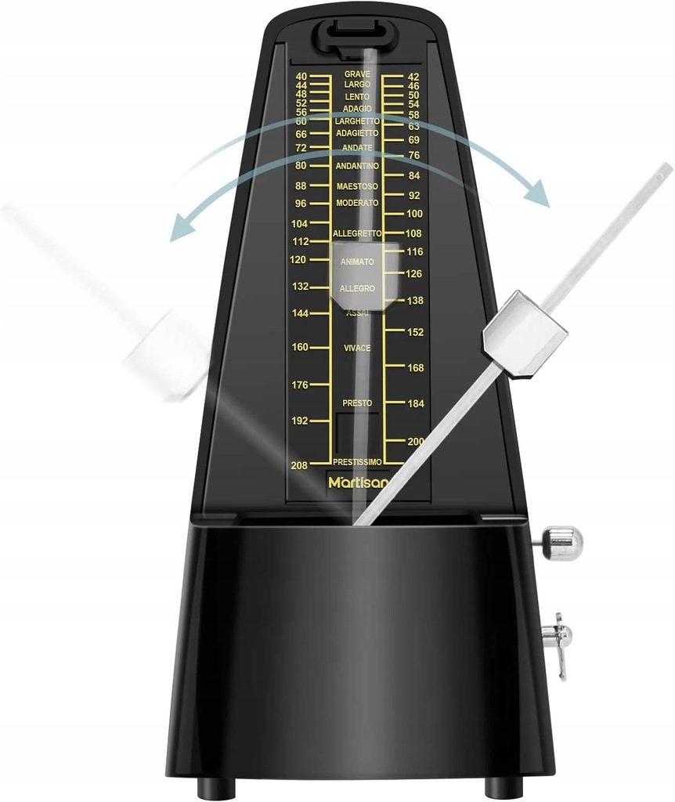

Agogika
Agogika
To element dzieła muzycznego, który zajmuje się wszystkim, co dotyczy tempa. Kompozytor oznacza tempo na początku utworu, używając do tego określeń włoskich, który, jak wiadomo, jest głównym językiem używanym w muzyce. Rzadziej zdarza się używanie określeń w innym języku, nie jest to jednak całkowicie niespotykane.
Rozróżniamy trzy rodzaje temp: wolne, umiarkowane i szybkie. Wymienimy do każdego z nich kilka najczęściej używanych oznaczeń.
| tempa wolne | znaczenie |
|---|---|
| Largo | szeroko, bardzo powoli |
| Lento | powoli |
| Adagio | wolno |
| Grave | ciężko |
| tempa umiarkowane | znaczenie |
| Andante | w tempie spokojnego kroku |
| Moderato | umiarkowanie |
| Allegretto | dość żywo |
| tempa szybkie | znaczenie |
| Allegro | wesoło, ruchliwie |
| Vivo | żywo |
| Vivace | prędko |
| Presto | szybko |
Tempo zasadnicze czasem może ulec chwilowej zmianie. Do oznaczania takich rzeczy jak zwolnienia lub przyspieszenia używamy następujących określeń:
| Termin | Znaczenie |
|---|---|
| Accelerando (accel.) | przyspieszając |
| Animando | ożywiając |
| Poco a poco string. | stopniowo przyspieszając |
| Ritardando (ritard.) | zwalniając |
| Ritenuto (rit.) | opóźniając, powstrzymując |
Oznaczenie metronomiczne
Jeśli kompozytor chce dokładnie określić tempo danego utworu, wykorzystuje w tym celu oznaczenie metrorytmiczne, które mówi o tym, ile jakichś wartości mieści się w minucie (używamy tego też np. do ustawiania tempa w metronomie)
poniżej przykład metronomu mechanicznego marki Lekato Ciekawym zjawiskiem jest rubato (często wykorzystywane np. przez Fryderyka Chopina). Włoskie słowo rubare oznacza ,,kraść". Tak więc rubato będzie przedłużaniem jednej nuty na rzecz innej, lub na odwrót - skracanie jakiegoś dźwięku, aby przedłużyć inny, przy jednoczesnym zachowaniu płynności tempa i ilości wartości w takcie.